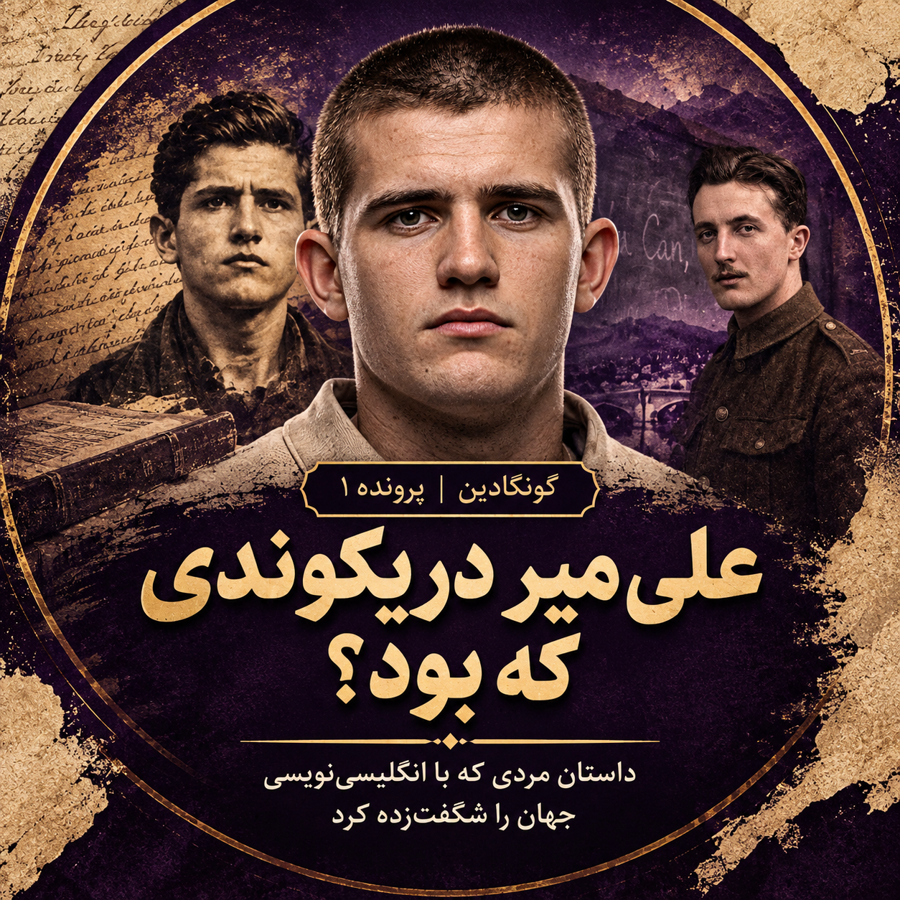

علی میردریکوندی، دهقانی گمنام از تبار لرستان، بیهیچ آموزش رسمی دست به قلم برد و دستنوشتهای نوشت که سالها بعد در بریتانیا با نام «بهشتی برای گونگادین نیست» منتشر شد و شهرتی جهانی برایش رقم زد؛ شهرتی که خودِ او هرگز از آن باخبر نشد. روزنامههای آن روزگار در ایران او را «میلیونر گمشده» خواندند: مردی که از نوشتن یک کتاب ثروتی هنگفت به دست آورده بود بیآنکه خبر داشته باشد.
در سالهای پایانی زندگی، تنها همدم او یک کتابفروش بروجردی بود؛ نزدش میرفت، چای مینوشید و کتاب میخواند، سپس به قبرستان میرفت تا در جوار مردگان بیارامد.